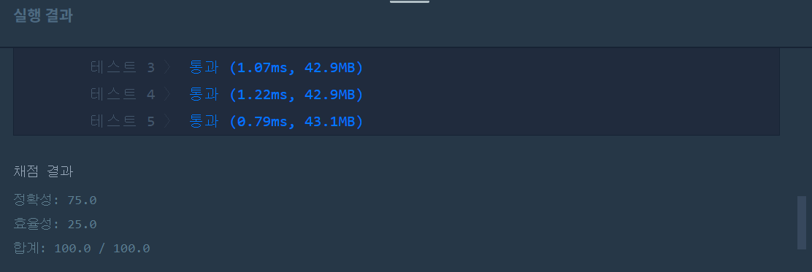

문제
https://programmers.co.kr/learn/courses/30/lessons/42886
( ᐛ )و 도전
1. 설계
- 추의 무게 순서대로 오름차순 정렬한다.
- 현재까지 추를 조합해 잴 수 있는 무게의 최댓값을 answer이라 가정한다.
- answer을 가장 작은 추 무게로 초기화한다.
- 0번째 값은 체크했으므로 그 다음 1부터 마지막까지 순회하며
- 현재 추(w)가 answer+1보다 크다면 answer+1은 만들 수 없다는 뜻이므로 answer+1을 리턴한다.
- 아니라면 answer+w까지는 추를 조합하여 만들 수 있으므로 answer+=w한다.
2. 구현 (성공 코드)
import java.util.*;
/**
*
* @author HEESOO
*
*/
class Solution {
public int solution(int[] weight) {
Arrays.sort(weight);
int answer=weight[0];//무조건 1이어야함
//answer까지는 무게 측정이 가능하다는 뜻임
for(int i=1;i<weight.length;i++){
if(weight[i]>answer+1){//answer다음의 answer+1을 만들 수 없다면
break;
}
answer+=weight[i];
}
return answer+1;//만들 수 없는 최솟값이므로 만들 수 있는 answer다음의 answer+1을 리턴
}
}
3. 결과
 성공٩(˘◊˘)۶
4. 설명
- weight를 오름차순 정렬한다.
- 1부터 시작해서 무게 측정이 가능한지 확인하기 위함이다.
- answer은 최대 answer까지 무게 측정이 가능하다는 뜻이다.
- answer을 weight[0]으로 초기화했으므로 현재 1까지는 무게 측정이 가능하다는 의미이다.
- 0부터 i까지의 무게 추를 모두 더한 값이 answer이다.
- answer까지 측정이 가능하므로 그 다음 숫자인 answer+1이 가능한지 확인해야한다.
- 따라서 현재 weight[i]가 answer+1이거나 answer+1안의 범위(weight[i]<=answer+1)에 들어와야한다.
- 만약 weight[i]==answer+1이라면 weight[i]하나로 answer+1이 측정 가능하다.
- weight[i]<answer+1이라면, answer+1은 answer+w-(w-1)로 만들 수 있다. (w-1은 당연히 만들 수 있다. 왜냐하면 w라는 무게는 1부터 i까지의 조합으로 만들 수 있으므로 이전의 값 w-1역시 가능하다.)
- weight[i]가 answer+1보다 크다면 answer+1은 만들 수 없다.
- answer까지는 모든 추를 더해서 만든 최댓값인데, weight[i]가 1이 아니고서야 answer+1을 만들 수 없다.
- 따라서 지금까지의 추를 조합해서 만들 수 있는 최댓값은 answer이 마지막이 된다.
- answer+1이 가능하다면 answer+=weight[i]한다.
- 이제 0부터 i까지 조합으로 answer+weight[i]까지 측정이 가능해졌다.
- 설명3에서 weight[i]<answer+1일때 answer+1이 가능한 것처럼, answer+2…answer+weight[i]까지도 당연히 가능하다.
- (사실 answer+=weight[i]하는게 잘 와닿지 않는다. 뭔가 당연하면서도 당연하지 않게 느껴져서 여기서 시간을 다썼다.)
- 리턴은 측정할 수 없는 수의 최솟값이므로 answer+1을 리턴한다.
- answer은 측정 가능한 값이고, 문제에서 요구하는 것은 측정할 수 없는 최솟값이므로 answer+1이다.
해결 완료!
코드를 봤을때는 되게 간단해보이는데 문제는 그렇지 않았다. 그냥 문제를 주고 풀어라 해도 노가다로 뛸 판에 코딩하라니까 더 어려웠다.
참고
- Greedy ‘저울’ 알고리즘 문제풀이 https://geehye.github.io/programmers-greedy-07/#
- [백준 #2437번 JAVA] 저울 풀이 https://plplim.tistory.com/59
- 백준 2437번 저울 https://jaimemin.tistory.com/756